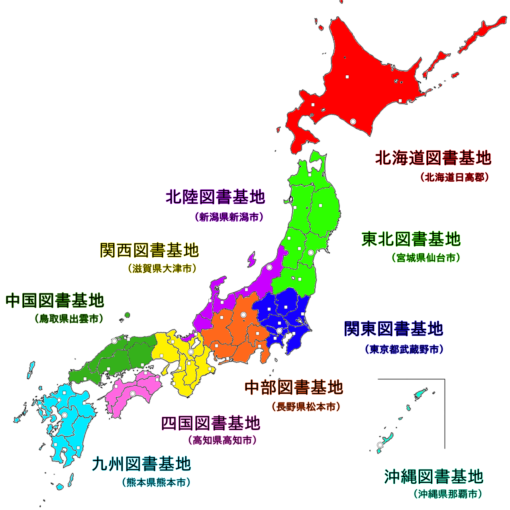
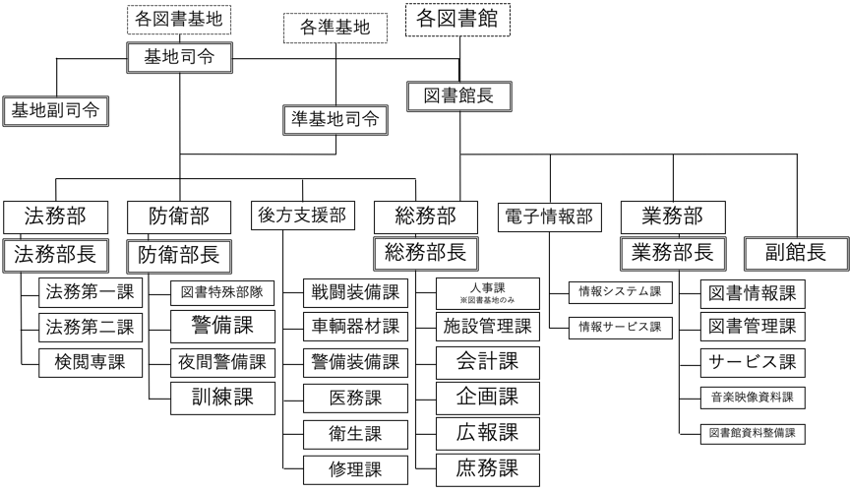

図書隊について
基地分布

全国図書準基地
| 北海道図書基地 | 東北図書基地 | 北陸図書基地 |
|
|
|
| 関東図書基地 | 中部図書基地 | 関西図書基地 |
|
|
|
| 中国図書基地 | 四国図書隊 | 九州図書基地 |
|
|
|
組織図

階級章
| 特等図書監 | 一等図書監 | 二等図書監 | 三等図書監 |
| 一等図書正 | 二等図書正 | 三等図書正 | |
| 図書士長 | 一等図書士 | 二等図書士 | 三等図書士 |
 |